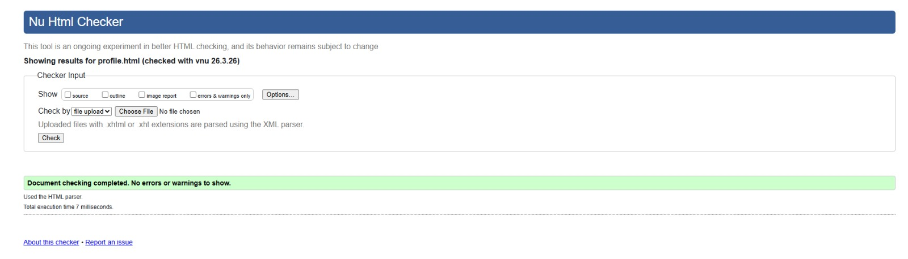
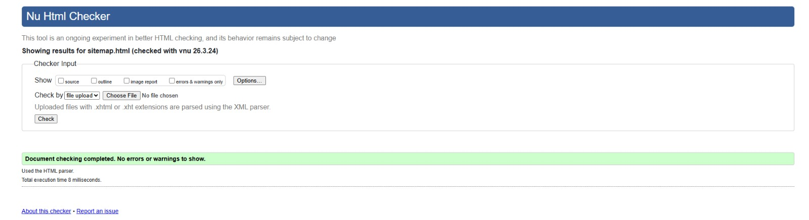
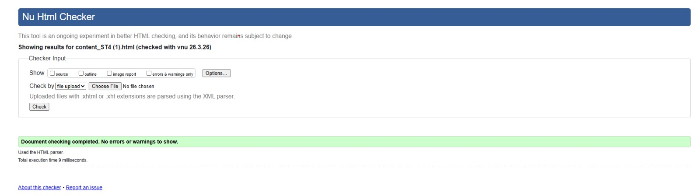

User Profile Page – Validation Report
The User Profile page (profile.html) passed W3C HTML validation with
no errors. The validator confirmed that the embedded <style> block,
the JavaScript <script> block, and all structural HTML elements are
correctly formed. The aria-label on the progress bar wrapper generated no
warnings.

Screenshot shows the W3C Markup Validation Service result for
profile.html — 0 errors, 0 warnings.
Back to Page Editor
Sitemap Page – Validation Report
The Sitemap page (sitemap.html) passed W3C HTML validation with no errors
after one correction: a stray </a> closing tag (identified at line 147
of the original draft) was removed. The inline SVG, including <line>,
<a>, <g>, <rect>,
<text>, and <title> elements, all validated
correctly within the HTML5 document.

Screenshot shows the W3C Markup Validation Service result for
sitemap.html — 0 errors, 0 warnings.
Back to Page Editor
Content Page (Solar Energy) – Validation Report
The Content page (content_ST4.html) passed W3C HTML validation with no
errors. The embedded CSS (inside the <style> tag in the
<head>) was parsed without issue. All six content sections, the
internal navigation <nav>, the four images, and the fixed
Go-to-Top link were accepted as valid HTML5.

Screenshot shows the W3C Markup Validation Service result for
content_ST4.html — 0 errors, 0 warnings.